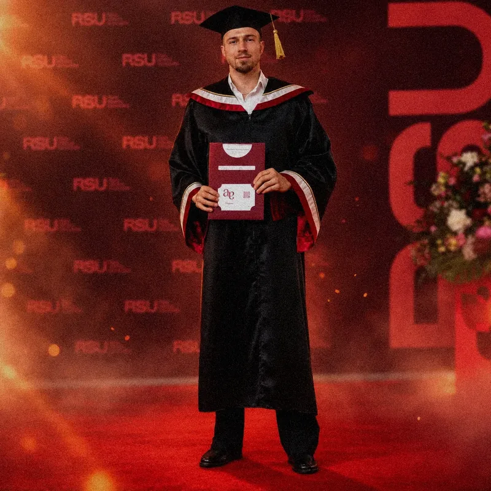
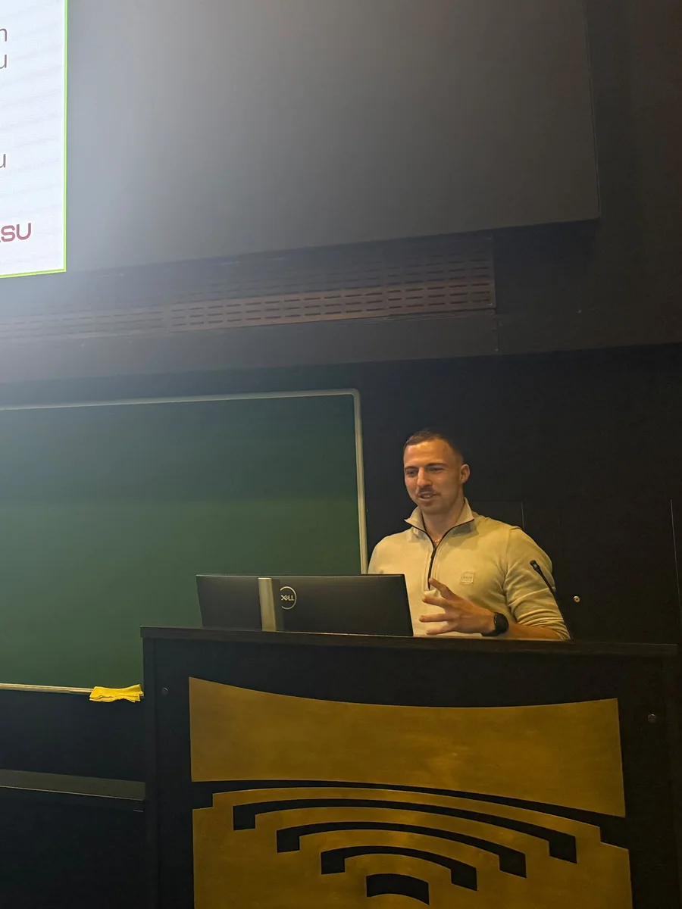

Izglītība
MSc
sporta zinātnē
Psiholoģiskā sagatavošana.
RSU
jaunais pētnieks
Rīgas Stradiņa universitāte.
3
valstis vienā pētījumā
Latvija, Lietuva, Taivāna, 2026-2028.
ES
pētniecības projekts
Sport-IE, starptautiska komanda.